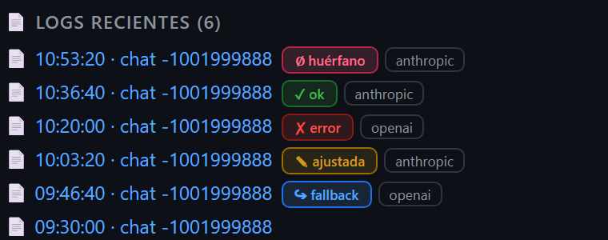
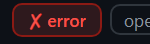
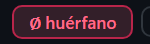
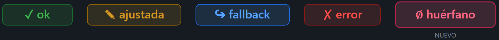
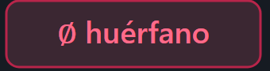

RENDER REAL — /legacy · Actividad Commander

zoom · badge
huerfanozoom · badge
error (fila contigua, otro rojo)
zoom · el MISMO badge con
design-tokens.css inaccesible (UX-2)
MOCKUP ACORDADO — set completo de resultados

zoom · badge
huerfano del mockup